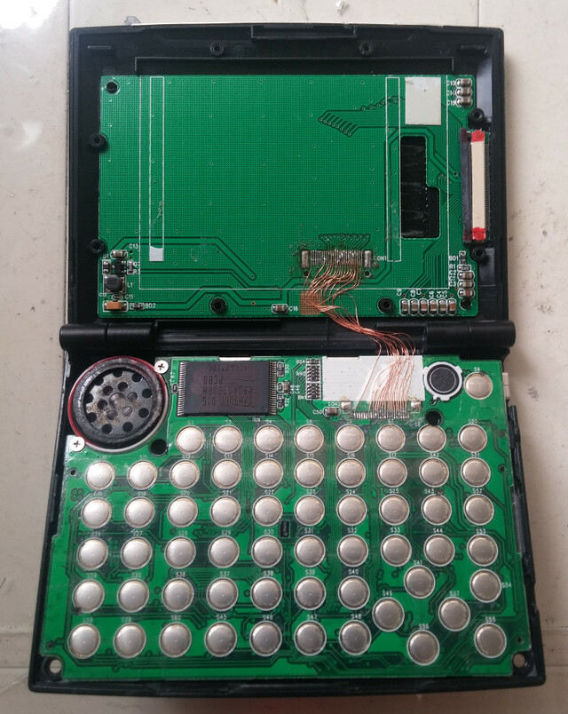
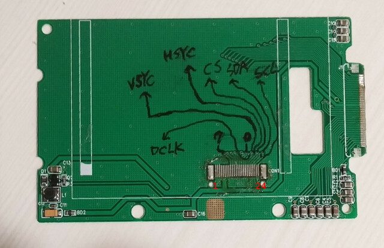
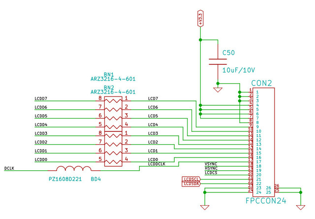
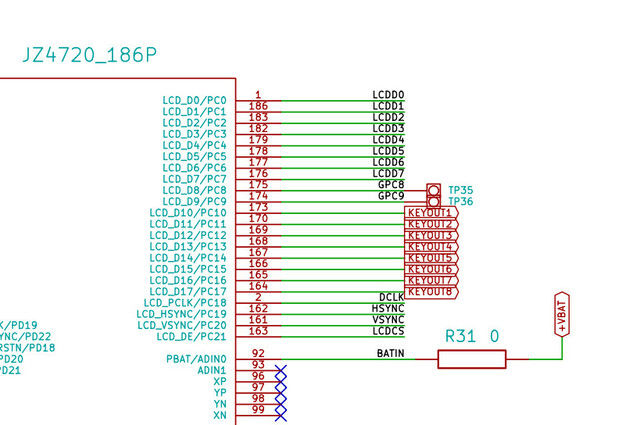
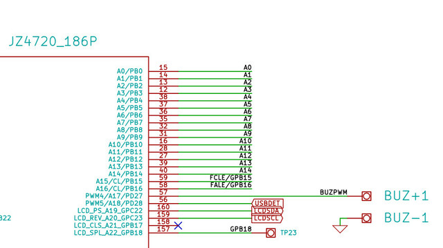
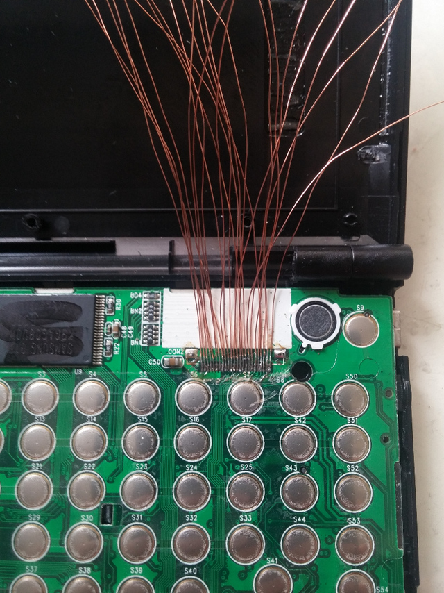
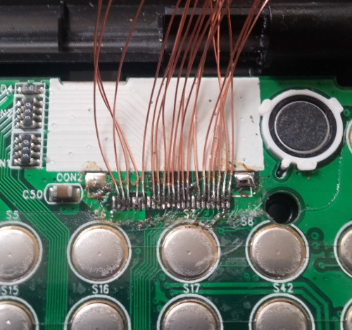
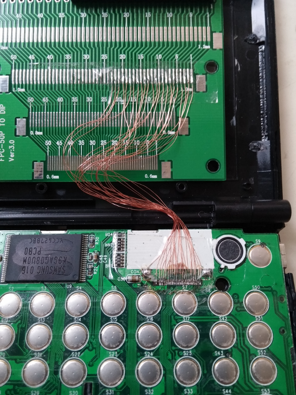
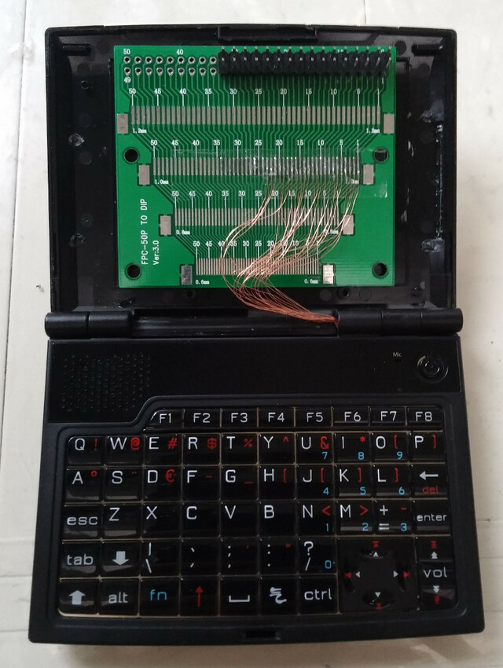

目前狀態



| Pin | Name |
|---|---|
| 1 | GND |
| 2 | GND |
| 3 | GND |
| 4 | VCC |
| 5 | VCC |
| 6 | VCC |
| 7 | VCC |
| 8 | GND |
| 9 | D0 |
| 10 | D1 |
| 11 | D2 |
| 12 | D3 |
| 13 | D4 |
| 14 | D5 |
| 15 | D6 |
| 16 | D7 |
| 17 | DCLK |
| 18 | VSYC |
| 19 | HSYC |
| 20 | CS |
| 21 | SCL |
| 22 | SDA |
| 23 | GND |
| 24 | GND |
JZ4720對應腳位





